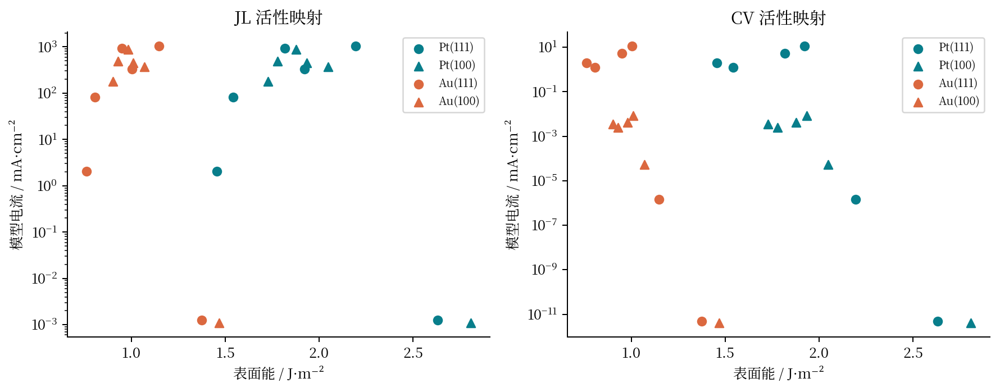
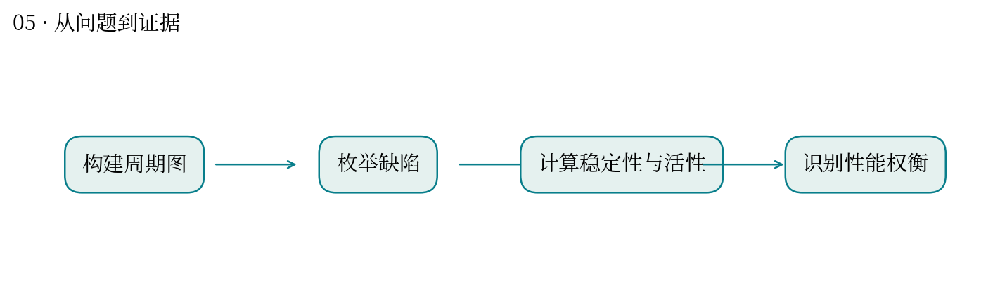
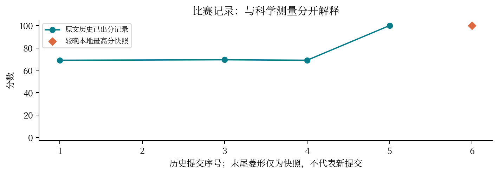

现实中想解决什么：燃料电池催化剂应该选择哪种表面，才可能更有效利用贵金属？
从计算到应用：表面原子位点 → 氧还原反应活性 → 电极性能与贵金属用量。
这次实际做到哪一步：本题用两种映射估计表面活性，并比较表面能；映射分歧提示候选排序不稳。
还缺什么：模型电流不等于电池实测电流。还需要真实电化学环境、稳定性、传质及电极实验。
金属表面缺几个原子，会让催化更好还是更不稳定？
最高分快照：100.0 · 2026-10-12T01:11:24+08:00
缺陷会改变表面原子的邻接环境，从而改变题设模型的活性与表面能。两项指标存在权衡。
把 Pt/Au 表面转为周期原子图，比较晶面、缺陷模式及两种活性映射，产生 48 个表面汇总与位点数据。
结果图按 JL/CV 映射分开展示表面能与模型电流。部分缺陷在一种映射下活性高，在另一种映射下显著降低，结论依赖代理关系。
周期边界的邻居计算、空位分母、位点到整体的汇总都可能造成系统误差。不同活性模型不能混在一条趋势线中。
像在基因共表达网络里研究局部连接结构与功能的联系。邻接图是结构表示，功能预测仍依赖下游模型，不能仅凭连接度断定机制。
这里的电流是题设模型计算值，不是电化学实测。Pareto 比较必须在相同模型和分组内解释。



| attempt | 提交时间 | 分数 | 状态 |
|---|---|---|---|
| 52004 | 10-11 00:39:43 | 69.0 | 已出分 |
| 52262 | 10-11 01:36:49 | — | rejected |
| 52483 | 10-11 02:38:28 | 69.4 | 已出分 |
| 52642 | 10-11 03:21:05 | 69.0 | 已出分 |
| 53498 | 10-11 09:57:08 | 100.0 | 已出分 |
源文件 SHA256 见 证据清单；用 scripts/build.py 重建图表。